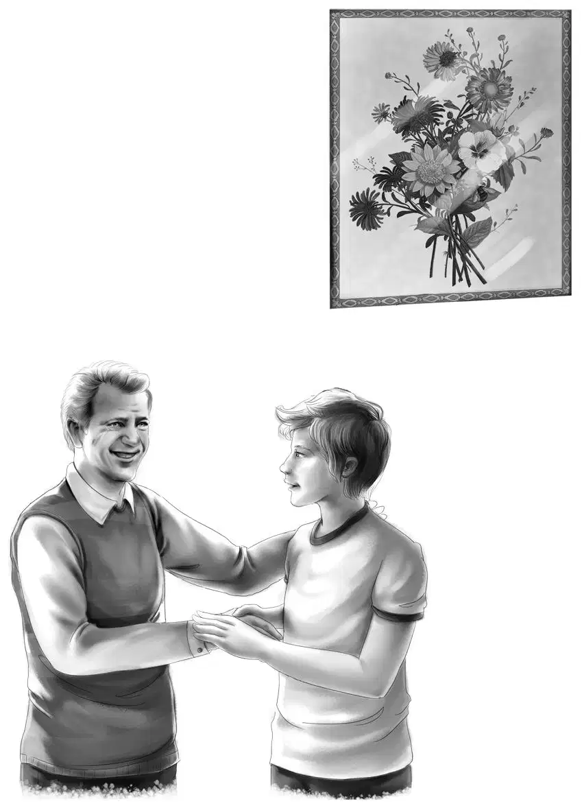
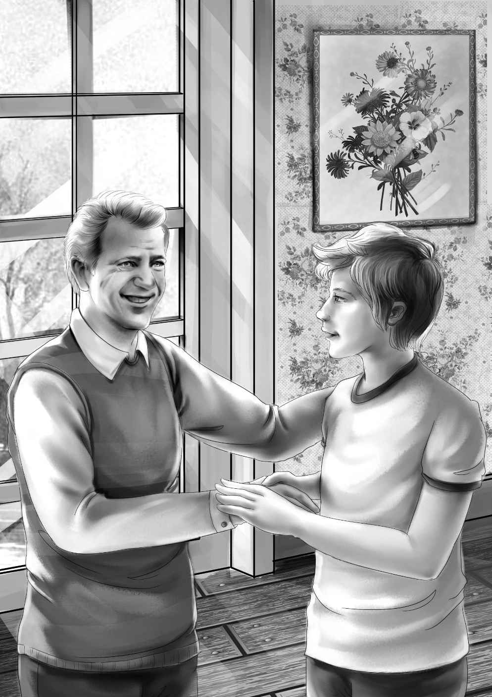

Grandfather sat forward in his chair.
"Another thing," he said."We ought to go home soon."
"Oh,why?" asked Benny.
Mr.Alden laughed."I have to work,for one thing."
Jessie said,"Oh,I suppose you do."
Henry said,"I must get ready for college,too."
"I shall miss you all," said Larry.
"You won't miss Henry," said Benny."You'll see him every day at college."
"I can go back to my house this morning," said Larry."I feel all right—only weak."
"I'll take you in the station wagon," said Henry,"and Mr.and Mrs.Cook,too."
Suddenly Mrs.Cook said,"Wait!I have an idea.You must all come to our house for supper."
Mr.Alden shook his head."Better not,Mrs.Cook," he said."You'll have enough to do taking care of Larry without cooking a supper for eight.But we'd enjoy it all right."
"I won't need a thing," said Larry."I'll just lie down once in a while."
Mrs.Cook smiled.She said,"Larry isn't the only one in the family who can cook.I do it,too.And I like it."
The four young Aldens were looking at Grandfather,hoping he would change his mind.
"Very well," he said."We'd love to come if you really feel that way."
"Good!" said Mrs.Cook."Come about five and see our yard.We'll eat at six."
Benny said,"I won't eat much lunch,Mrs.Cook,so I can eat a lot of supper.I bet you are just as good a cooker as Larry."
They all laughed at Benny."Really," he said,"I mean it.I'll eat hardly any lunch at all."
"I can't imagine it," said Henry.
"I'll get dressed," said Larry,"and go along home."
"You'll have to wear some of my clothes,"said Henry."Yours aren't dry yet."
After the Cook family had gone,Benny said,"Now I wonder what Mrs.Cook will have for supper.It won't be frankfurters,I'm sure."
"It won't be chowder," said Henry,smiling.
"It won't be hamburgers," Benny went on.
"Now,Benny," said Violet,"don't be talking about things to eat all the morning.You make me hungry already."
"What shall I do,then?"
"You might put up the clothes line.Tie it between the houses.We can get Larry's things dry in the sun."
"Shoes and all?" asked Benny.
"Yes.Tie the strings together and hang them over the line."
When the job was done,Benny came in again."What shall I do now?" he asked.
"Oh,Benny," cried Jessie."Go down to the beach and sit and watch the water.We're very busy."
Benny went slowly down to the beach.In a minute he shouted,"Oh,come quick! Millions of shells! Heaps and piles of shells! Bushels of shells!"
Everyone ran.They swept the shells and shoveled the shells into anything that would hold them.They set them on the rock table.As Mr.Alden worked he said,"I think we're going to make it.These shells were washed up by the storm.They came from far away."
The water came in steadily.At last almost every shell was saved.
"We won!" cried Benny."Now the tide can come in."
"And now we'll have fun," said Mr.Alden."See if you can find an empty pan."
"Here's a kettle," said Violet.
"Just the thing,child," said Mr.Alden."I think it will be full."
"What are you going to do?" asked Henry.
"I am going to pick over the shells and save the interesting ones," said his grandfather.
The children sat down to watch.At once Mr.Alden cried,"Here's a beautiful red scallop shell,and this black and white one came from far away.These shells never grow around here.That is why some of them are broken."
Quickly Mr.Alden picked over the shells.He never stopped once.
"My!" said Benny."You know a lot about shells."
"I ought to," said Mr.Alden."I have studied them all my life.Isn't this shell beautiful?"
"Say!" cried Benny."Doesn't it look something like an olive? And speaking of olives,I wonder ifMrs.Cook will have pickles?If she has hamburger she will have to have pickles."
"Now,Benny," said Henry,"stop talking about food.You know you are not hungry yet."
But all day long Benny was waiting for five o'clock to come.At quarter to five he said,"Don't you think we could go now? It will take us fifteen minutes to walk to Mrs.Cook's."
Henry said,"Oh,so we are going to walk,are we?"
"Henry and I will ride," said Mr.Alden.
"Wait five minutes more,Benny," said Henry,"and you can help me wipe off the car.Then we will go."
They reached the Cooks' house at exactly five o'clock.Mrs.Cook came around the house from the backyard."You are just in time," she said."Mr.Cook wants to show you our yard."
The Aldens were very much surprised when they saw the yard.It was beautiful.There were big bushes of flowers and beds filled with flowers.The grass was very green.In the middle was an enormous fireplace and a long table.
"She does have pickles," whispered Benny to Jessie.There were chairs around the table.
"We might as well eat," said Mrs.Cook."We are all here."
"That's good," said Benny."I've been hungy all day."
"We'll fill you up," said Mr.Cook.
Larry sat in a long chair.He looked weak,but he said he felt fine.
"You can help me,Henry," said Mrs.Cook.Henry came back from the house with a pan of rolls.They were light and brown.They smelled delicious.
Benny whispered again to Jessie,"I still wonder what we will have to go with the rolls."
He did not have to wait long.Mrs.Cook gave Henry two holders,and he lifted an enormous pan off the fire.The fire was almost out.
"Oh! Oh! Chicken legs!" yelled Benny."I can eat a lot of those."
"How many can you eat?" asked Mrs.Cook.
"Well,four anyway," said Benny."My friend Mike can eat eight."
"You can have eight,too,if you want," said Mrs.Cook,laughing.
But when Benny saw the watermelon,he ate only four chicken legs.Mr.Alden said,"Mrs.Cook,these are delicious.You can certainly cook as well as Larry."
Suddenly Larry looked toward the street.A big car drove up quietly and stopped.
"We have more company,Mother,"Larry said,pointing to the car.
"No," shouted Benny,"it's our company! It's Mr.Carter.He's getting out now."
And it was John Carter,one of the men who worked for Grandfather.He had a large black box.He carried it over to where everyone waited.
With a smile he said,"I felt lonesome,and after I read your letters I wanted to see Larry."
"Well,this is Larry," said Benny."He is lying down in that long chair because he was almost drowned in the storm we had."
"I know," nodded Mr.Carter."Your grandfather telephoned me." He shook hands and said hello to everybody.
All this time Larry looked at the box.He knew what was in it,but he could not believe it might be for him.
Mr.Carter was saying,"Here you are,Larry.From what Mr.Alden told me,I guess you need a bigger microscope.Mine has just been lying around.I haven't used it for years now that I'm not with the F.B.I.You may keep it."
Benny carried the box over to Larry for him to open.
Larry's hands shook so that Benny said,"Maybe your hands are shaking because you almost drowned."
"No," said Larry,and his voice shook,too."It's because I'm so glad to have a good microscope.I can never thank you enough,Mr.Carter,never!"
"Don't try," said Mr.Carter.He and the Aldens were glad to see how pleased Larry was.
"Well,Carter," said Grandfather,"you didn't come way up here just to give Larry that microscope.You must have had some other reason."
Mr.Carter laughed and said,"Well,so I did.I thought I might help you pack.And I brought you a letter from Adams College.It is from a Dr.William Steere."
Grandfather read the letter at once."Good," he said."Excellent.Larry,this Dr.Steere wants a boy like you very much."
"Why,sir?" asked Larry.
"Because he is doing the same work that you are.He is experimenting with seaweed and plankton for food."
"Wonderful!" said Larry."I'd like to work with him."
"He says something else," said Grandfather."He says that we ought to spend more money getting food from the sea instead of bothering with space."
"I think so,too," said Larry."I suppose we ought to do both.But I am more interested in the sea.Think how deep it is.Miles and miles.And all full of food if we can only get it."
Mr.Cook put his hand on his son's shoulder.He said,"I can see that you and Dr.Steere will get along fine."
John Carter had already eaten,but he had a large piece of watermelon just the same.
When the time came to say good-by to the Cooks,Henry said,"We go back to our real home tomorrow.We're sorry to go."
"And we are sorry to see you leave," Mrs.Cook said.
"But I'll see you soon," Larry called,"at college."
The next day Mr.Carter was a great help.He worked with the girls on the packing and he took some of the bags in his own car.

Benny ran to Mr.Hall's store to give him the lighthouse keys.When he came back,the family was ready to go.
"I want to ride with Mr.Carter," said Benny.
"Very well," said Grandfather."No reason not to,if Mr.Carter wants you."
Mr.Carter laughed and said he wanted company.The girls and Grandfather rode with Henry.
They drove past Mr.Hall's to wave good-by and then past the Cooks before leaving Conley.
At last home again,they told Mrs.McGregor,the housekeeper,all about their adventures.
Mr.Carter told how well the young people had solved the mystery."I couldn't have done better," he said.
"Oh,yes,you could," said Jessie."You used to be an F.B.I.man."
"No,really,I couldn't," said Mr.Carter."Larry would trust young people more than he would a man.I'm sure of that.You were wonderful with Larry."
"That's right,John,"said Grandfather,nodding.image"They were."
The bags were unpacked and Henry took the empty car around to the garage.
But the family did not sit around very long doing nothing.Everyone was busy in what was left of the summer.
One day Grandfather and Henry went to a store to get Henry clothes for fall.But Grandfather bought two jackets,not just one.Henry tried them on and said they were just right.One was gray and one was brown.The brown one went into a special box to be mailed to Larry Cook.
Henry wrote a letter saying it was the kind of jacket all the boys wore at Adams.
Then the time came when Henry and Larry went to Adams College.Grandfather went,too.He took the boys into the dean's office and told him who Larry was.
Larry sat down near the door.It was half open.
Suddenly Larry stood up looking very much surprised.A tall man came in.He looked at Larry once.Then he looked again.Then he held out his hand and said,"Well,well! Clam chowder!"
Larry cried,"Baked beans!" The two shook hands.
"What in the world are you two talking about?" asked Mr.Alden."Do you know Larry?"
"Yes," said the tall stranger."I know he makes the best clam chowder and baked beans that I ever ate!"
The dean laughed.He said,"That makes my work easier,if you know each other.Larry,this is Dr.Steere."
"Dr.Steere!" cried Larry."The one I am going to work for?"
"The very one," said the dean."Sit down,Dr.Steere.This is Mr.Alden,and this is Henry Alden.They brought Larry along to meet you."
Dr.Steere looked at Larry.He said,"I have seen your papers that you did all alone.You are already doing college work.I will be glad to help you because our work may be important to the whole world."
"I hope so," said Larry."It seems important to me."
Mr.Alden looked at his watch."I must go," he said."You two boys find your rooms and Henry's friends,and good luck to you both."
Mr.Alden shook hands with Larry.He said,"You have a wonderful teacher,my boy.I know you will do well."
Mr.Alden left and then Dr.Steere left.The boys went to find their rooms and the dean sat alone.
"I like a boy like that Larry,"he thought."And he has a fine friend in Henry Alden."
About a month later,Grandfather got a wonderful letter from Henry.
"Read it out loud," said Jessie.
This is what Mr.Alden read:
Dear Grandfather and All,
Larry and I are so excited! Dr.Steere likes Larry's work.He has asked him to stay here at the college all summer and work with him.But Larry thinks he shouldn't do that.He wants to be with his father in the summer.So what do you think? Dr.Steere says he will come to the little white house in Conley and work with Larry.They will fix up the little house and put on a new room.Dr.Steere says he will call it "Cook's Experiments." Isn't that wonderful? He thinks some day Larry will be famous.
I have to tell you that Larry wears his white lab coat all the time.He almost never wears his jacket.
The boys like him and think he is smart.
Love to everybody,
HENRY
"What wonderful news," said Jessie."Aren't we glad we made friends with Larry Cook?"
"I am very much pleased with you,"said Grandfather."You young people changed a cross young bear into a fine young man."
"I think Benny did that mostly," said Jessie.
"Well,I don't," said Benny."I think we all did it together—and you,Grandfather,and Captain Snow and Watch."
"Don't forget Mr.Hall," said Jessie.
"We'll never forget Mr.Hall," said Violet.
"No,sir!" said Benny."Mr.Hall knows absolutely everything!"